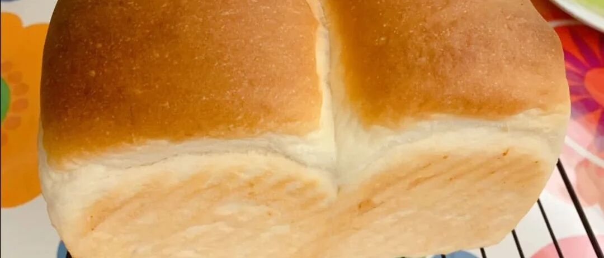

云朵一般柔软 - 银座顶级烫种吐司
四月的最后一天，在屁滚尿流中度过。一年的时间已经过去了三分之一，不知道为什么，一般我们说到四分之一的时候，总觉得还有很多时间，说到三分之一，就感觉时间已经过去大半。
四月并没有比三月更好一些，虽然大部分的数据显示六月中下旬就可以有显著恢复，虽然四月比三月的业绩相比已经翻了一倍。但是伤痕已经造成了，且惯性还在持续。
这样的世间，就让我们好好琢磨着吃吧。
这个吐司水量有90%，我做了N次，想了很多办法，现在终于找到了正确的做法，普大喜奔！！！我由衷的建议所有有厨师机的朋友们，都一定要试试！真的是超软超软的。
首先，一定要用桨！！！用桨！！！用桨！！！不要用钩子，长这样。

这个方子来自一本书《银座顶级吐司三明治严选食谱》，非常经典，什么也不要改了，改了就是个一般的烫种吐司，不是银座顶级烫种吐司了。
原方是用的山茶花粉，我用过王后吐司粉，也用过一般的高筋粉，个人觉得都还可以的，当然越贵的，貌似越软一点点，哈哈。蛋白质含量11-12%的粉都可以。

然后因为是很软的面团，所以一开始需要一点时间混合，不要急，完全混合好了再加档。4挡开始第二次的时候，基本就不太黏缸了。


这个时候加黄油


千万不要打过了！

起缸的视频如下：很软很软很软哒！请全屏看！
发酵的时候，需要60分钟后，翻折一次，再发酵30分钟。
翻折的视频如下：请全屏看！
翻折完以后，继续发酵30分钟。

发酵完毕。

分成两份，擀开，卷起。擀开的时候会很粘手，可以稍微撒一点点手粉防粘。


发酵到8分，可以平模，9分可以做山型。

注意：因为预热要到200度，所以在烤箱里发酵的话，要提前取出来预热。这时候还是会继续发酵的。我竟然一次平模都没做成。。。每次都有点事情，耽误了，唉。。。下图这种，就只能山型了。。。

上色就加盖锡纸，颜色好看点。


夹了草莓冰激凌吃，哈哈哈！棒棒！

翻车的视频，随便看看吧，真的超软鸭！
其他吐司方子：